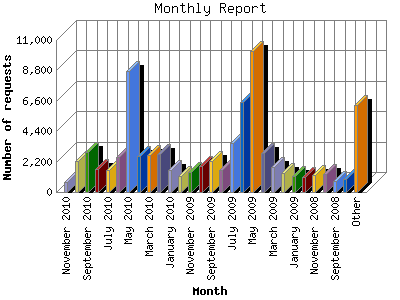

Analog 5.1
Analog 5.1 Report Magic 2.21
Report Magic 2.21The Monthly Report identifies activity for each month in the report
time frame. Remember that each page hit can result in several server requests
as the images for each page are loaded.
Note: Depending on the
report time frame, the first and last months may not represent a complete
month's worth of data, resulting in lower hits.

| Month | Number of requests | Number of page requests | |
|---|---|---|---|
| 1. | March 2008 | 813 | 482 |
| 2. | April 2008 | 557 | 330 |
| 3. | May 2008 | 2,054 | 892 |
| 4. | June 2008 | 642 | 294 |
| 5. | July 2008 | 2,204 | 816 |
| 6. | August 2008 | 940 | 466 |
| 7. | September 2008 | 818 | 385 |
| 8. | October 2008 | 1,318 | 535 |
| 9. | November 2008 | 1,234 | 530 |
| 10. | December 2008 | 1,054 | 378 |
| 11. | January 2009 | 1,160 | 547 |
| 12. | February 2009 | 1,340 | 534 |
| 13. | March 2009 | 1,844 | 651 |
| 14. | April 2009 | 2,815 | 776 |
| 15. | May 2009 | 10,175 | 2,392 |
| 16. | June 2009 | 6,529 | 1,040 |
| 17. | July 2009 | 3,573 | 1,133 |
| 18. | August 2009 | 1,591 | 629 |
| 19. | September 2009 | 2,270 | 757 |
| 20. | October 2009 | 1,853 | 763 |
| 21. | November 2009 | 1,430 | 633 |
| 22. | December 2009 | 1,186 | 538 |
| 23. | January 2010 | 1,624 | 583 |
| 24. | February 2010 | 2,766 | 1,150 |
| 25. | March 2010 | 2,705 | 1,249 |
| 26. | April 2010 | 2,620 | 1,138 |
| 27. | May 2010 | 8,722 | 2,570 |
| 28. | June 2010 | 2,519 | 1,227 |
| 29. | July 2010 | 1,605 | 974 |
| 30. | August 2010 | 1,698 | 886 |
| 31. | September 2010 | 2,919 | 1,412 |
| 32. | October 2010 | 2,220 | 1,156 |
| 33. | November 2010 | 755 | 369 |
Most active month May 2010 : 2,570 pages sent. 10,175 requests handled.
Monthly average: 855 pages sent. 2,350 requests handled.
This report was generated on November 15, 2010 20:04.
Report time frame March 17, 2008 22:05 to November 15, 2010 23:56.
| Web statistics report produced by: | |
| Analog 5.1 | Report Magic 2.21 |